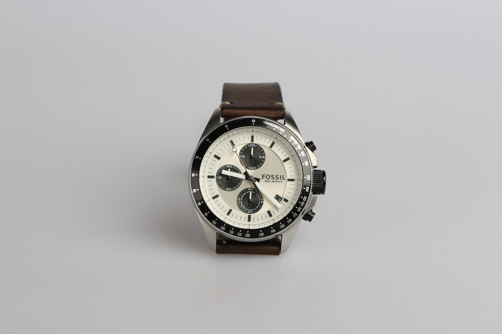
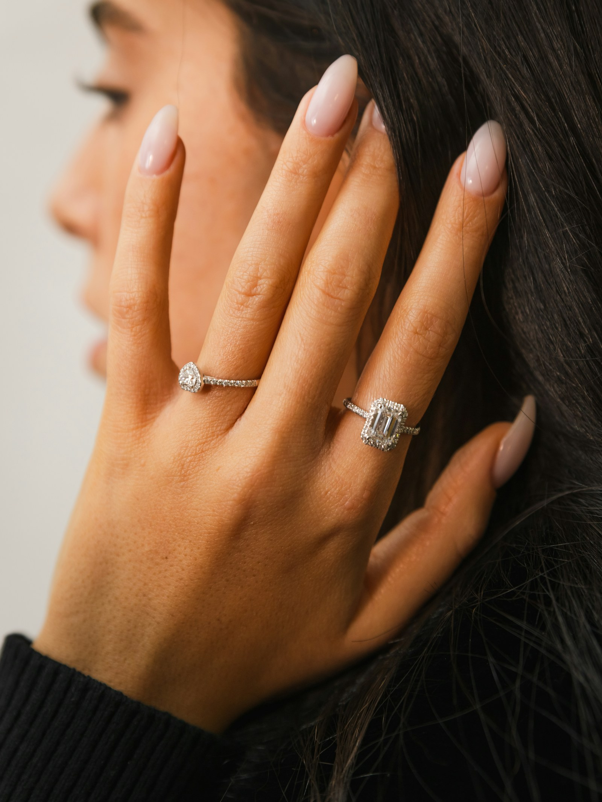
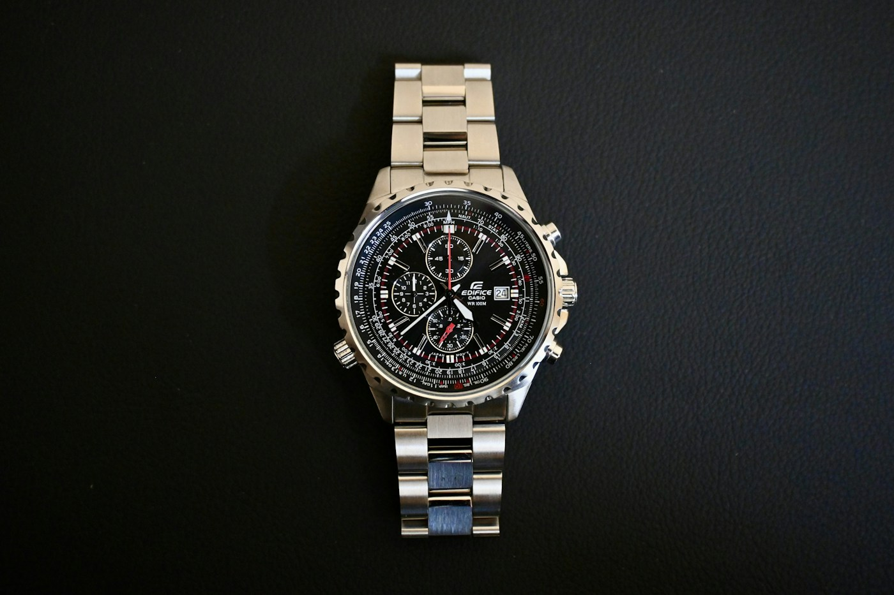
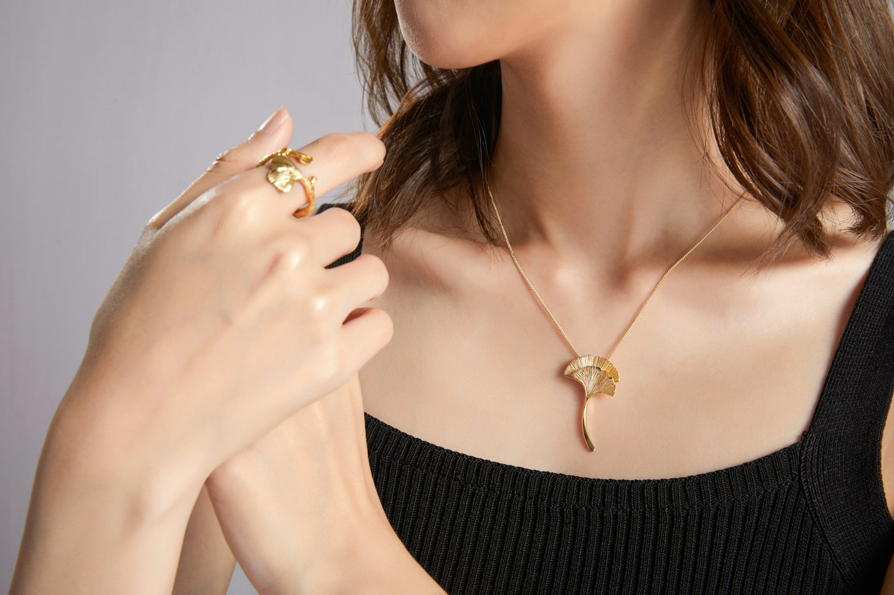
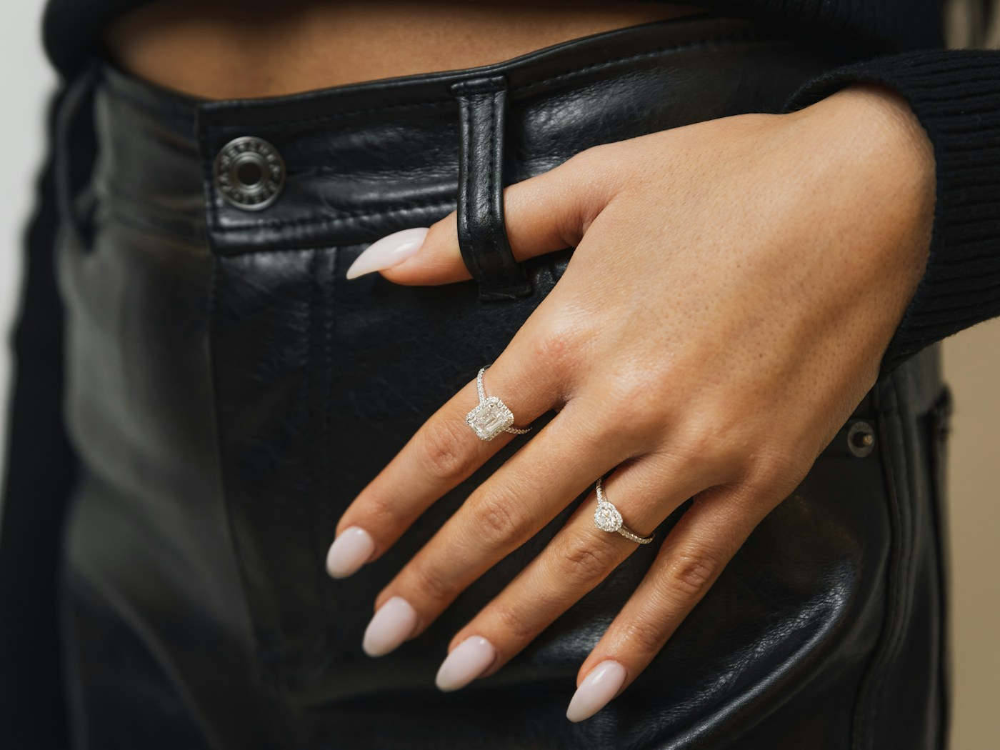
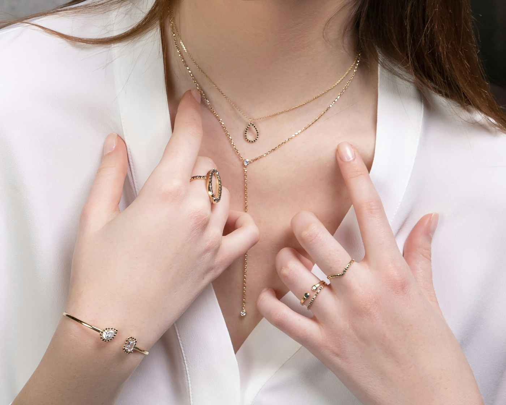
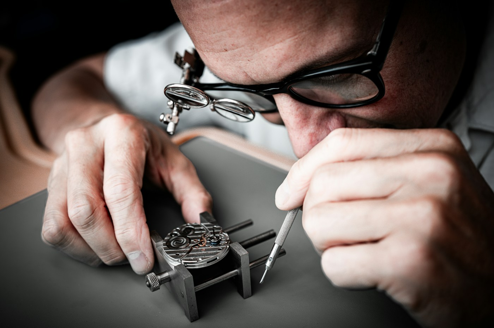
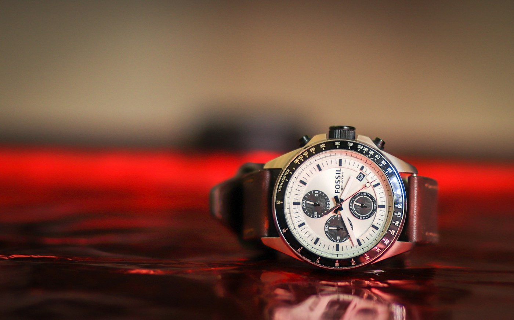

Tailored & Evening
Leather-Strap Dress Watches
Slender case profiles and restrained batons sit naturally beneath shirt cuffs without distraction.
A study in proportion, metal warmth, and quiet horological character—pairing personal watchmaking choices with gold, diamond, and sterling-silver essentials.

Different dials, lug profiles, and strap pairings shift a timepiece effortlessly between formal tailoring, travel, and daily routines.

Slender case profiles and restrained batons sit naturally beneath shirt cuffs without distraction.

Multi-register timing dials and brushed steel links offer resilience across daily movement.
Architectural dials and sculpted bezels anchor wedding wardrobes and long-term collections.

Explore clean stacking bands, oval pendants, and dual-tone hoops crafted to anchor daily jewellery rotations.
Shop Gold Jewellery
Designed for subtle wrist articulation and low-profile prong settings that catch natural daylight effortlessly.
Shop Diamond Jewellery
Cohesive styling relies on contrast in scale rather than quantity: pairing one flat collar chain with a slender pendant, or wearing brushed sterling links opposite a two-tone dress watch.

Every mechanical wristwatch houses dozens of tensioned springs, jewel bearings, and hand-adjusted components beating thousands of times each hour.
Understanding power reserve, escapement geometry, and case ergonomics transforms a watch from an accessory into a lifelong instrument.
Explore Watchmaking MaisonsFour distinct pieces drawn from our shared showroom catalogue for weddings, anniversaries, and personal milestones.

Comparing three fundamentals in person helps match a watch to your wrist and daily routine:
Case diameter and lug length govern wrist balance—from 36mm classic dress profiles that slip under cuffs to 40–42mm sport cases with broader dial presence.
Mechanical watches offer sweeping seconds and traditional spring-driven craft, while quartz timepieces deliver effortless accuracy with minimal upkeep.
Stitched leather straps keep weight light and formal, whereas brushed stainless-steel bracelets bring everyday resilience across seasons.
Prepare a private viewing request with your shortlist of watches or fine jewellery pieces.